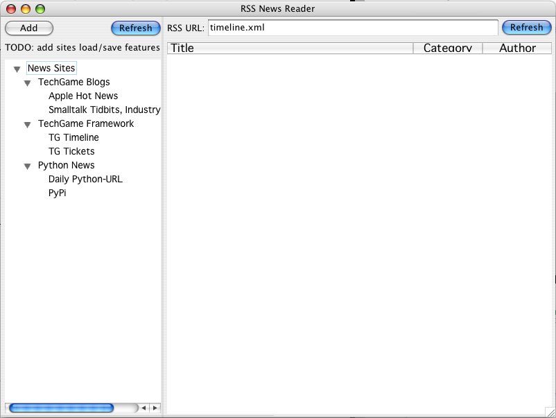

Techgame Python Skinning Framework
Introduction
The Techgame Python Skinning Framework (know hereafter as Framework) was designed to allow interface definition on various GUI toolkits using XML, css, and _Python: http://www.python.org.
It currently supports _wxWidgets: http://www.wxwidgets.org on Mac OS X, Linux and Windows. It contains a fully w3c compliant css parser [1], a very nice XML toolkit, a Notification system, BTree data classes, a uri resolver system and other useful utilities. Additionally, there are 439 tests [2], and 55 demo programs providing various usage examples.
This framework has gone through four generations of refactoring and has been used in at least five companies for commercial applications, several of which are still being sold and developed.
This document will first go through the top level folders and then get into specific usage and feature documentation.
[1] The only one we know of in the Python language
[2] As of 7 Feb 2006
Directory Structure
demo
This folder contains the folders skinning and css. The skinning folder further contains applications and toolkits. toolkits is where, as you may expect, to find demos related to the implemented underlying GUI tookits. Currently, toolkits only has wx, the only implemented GUI toolkit. Under wx, you have:
- docking
- Dynamic docking of skin files, and examples for docked versus undocked windows.
- elements
- This is where the lions share of demos are. All of the implemented wxWidgets should have at least one example in here. [3]
- extension
- This folder has examples demonstrating how to create your own custom widgets for use as tags in the skin files.
- localization
- Language localization example
- py2exe
- Showing how to set up a py2exe config file to build an exe including the skinning framework.
- uriResolver
- It should show how to use the uriResolver classes, but it doesn't right now
- zipfile
- Yes, you can run your skinning apps from a zipfile; this shows you how! This uses ZipResolver, part of the Resolver framework.
doc
You are already here if you are reading this.
proj
This is where the implementation code resides for the whole Framework. It's folders are:
- algorithms
- Currently btree and graphSearch algorithm implementations
- common
- This folder contains machinery for other parts of the skinning framework
- container
- Client usable BTree and weakDict classes
- guiTools
- Wrapper and helper modules for certain widgets; wx, win32, and pil. the wx folder contains some handy tools for using PIL, wxSizers, wx progress indicators, colors, bitmaps, etc. The win32 folder contains and activex wrapper and alpha blending support.
- interop
- Ctypes helper classes for dynamic libraries
- introspection
- tools for supporting line numbers in skin files in tracebacks.
- notifications
- Very useful set of modules for publish-subscribe and subject-observer style notifications framework. These can publish objects as well as simply notify via a callback.
- skinning
- This where the bulk of the code is; it contains GUI agnostic code in common (such as xmlNode and friends), the skinning engine, the GUI specific toolkit code.
- tasking
- Similar to the notifications framework, but you add Task objects and they call you back. Think of task driven events.
- tools
- currently has a copy of docutils
- uriResolver
- Filesystem and zipfile resolver classes. Very handy.
- w3c
- xml parser framework and css engine. The xml system uses expat, but provides a very nice front end to dealing with xml data. [4] However, this framework is customized to handle providing accurate line numbers and context with tracebacks so that you get the same level of debuggability with the skin files that you do with the associated Python files.
sandbox
Subject to change, but it contains experiments and such. If you find something you like in there, feel free! Um, pilComposites is very cool - if you like alpha-blended-on-the-fly images for use as, say, gorgeous buttons on a gui app.
scripts
Some helper scripts, and a way to get integrated tracebacks in vim
test
Where the tests are
[3] Notably missing is a wxGrid implementation
[4] Yes, we know there are 50 million xml libraries out there, but we started this in 2000 and haven't found anything so much better that we have needed to replace it :)
Using the Framework
This section should hopefully give you enough useful information to create your own applications based on this Framework.
Installation
There are several ways you can install the systems, but the one we commonly use is to put a pth file in the site-packages folder such as Dev.pth:
/Users/brian/Dev
In the Dev folder I typically have a TG folder with the various Techgame python projects in it. This TG folder needs to have an __init__.py as follows:
__path__.extend([ '/Users/brian/Dev/TG/framework/proj', '/Users/brian/Dev/TG/objectdbs/proj'])
This would allow you to import TG.skinning an TG.dybase, if you had both projects. You could omit any path that wasn't needed.
Application Structure
Nothing annoys me more than checking out a promising project, working through the tutorial/examples, and discovering that all the examples are toys, and that everything you really want to do requires a trip to the newsgroups!
Needless to say, I'm not gonna do that. I'm gonna show the usage patterns that we use in our commercial apps and show the fun stuff like drag and drop, dynamic docking of skins, model-skin interaction, etc.
There are plenty of toy examples in the demo/skinning/toolkits/wx/elements folder.
Models and Skins
Framework applications are just Python apps, so you can use any libraries you can get your hands on, but Framework apps have at least one skin and an associated model. You can see in the demos that many of them don't even have the skin in a separate file, but put the xml in a string and then use it. It is much easier to use separate skin files in real apps, however.
Let's start out with a not so simple finished product, contained in a single skin file, and then strip it out and build a step at a time:
<skin xmlns='TG.skinning.toolkits.wx'>
<style>
layout#host>* {layout-border: ALL,5}
layout#tool {layout-cfg:0,EXPAND}
frame {
show: 1;
size: 800,600;
locking: 1;
}
sash#rssSitesSash{
align: left;
size-border-all: 1;
style: 'NO_3D|CLIP_CHILDREN';
}
#rssSites {
layout-cfg: 1, EXPAND;
layout-minsize: 200,200;
font-size: large;
}
#rssNewsItems {
layout-cfg: 1,EXPAND;
layout-minsize: 300,300;
style: "LC_REPORT";
font-size: x-large;
}
sash#rssNewsDetailSash{
align: bottom;
show: False;
size-border-all: 5;
}
sash#rssNewsDetailSash>panel {
bgcolor: #EEEEEE;
}
#rssNewsDetailTitle {
layout-cfg: 1,ALIGN_CENTRE_VERTICAL;
style: ST_NO_AUTORESIZE;
font-size: xx-large;
font-style: bold;
bgcolor: #CCCCCC;
text: Wy;
}
</style>
<frame title='RSS News Reader'>
<layout-sash>
<sash ctxobj='model.sitesSash' id='rssSitesSash'>
<panel>
<layout id='host'>
<layout id='tool'>
<button label='Add'>
<event run='ctx.model.onAddSite(evt)' />
</button>
<spacer layout-cfg='1,EXPAND'/>
<button label='Refresh' default='True'>
<event>ctx.model.refresh()</event>
</button>
</layout>
<label text='TODO: add sites load/save features' />
<tree id='rssSites' ctxobj='model.siteTree' >
<event run='ctx.model.populateFromEvt(evt)' />
</tree>
</layout>
</panel>
</sash>
<layout>
<panel>
<layout id='host'>
<layout id='tool'>
<label text='RSS URL:' />
<spacer />
<textbox ctxobj='model.rssUrl'
layout-cfg='1,ALIGN_CENTRE_VERTICAL'
text='timeline.xml'
/>
<spacer />
<button label='Refresh' default='True'>
<event>ctx.model.populate()</event>
</button>
</layout>
<list id='rssNewsItems' ctxobj='model.newsList'>
<column col='0' text='Title' width='250' proportion='1' align='LIST_FORMAT_LEFT'/>
<column col='1' text='Category' width='100' proportion='0' align='LIST_FORMAT_CENTRE'/>
<column col='2' text='Author' width='100' proportion='0' align='LIST_FORMAT_CENTRE'/>
<event run='ctx.model.onShowDetails(evt)' />
<event type='EVT_LIST_ITEM_ACTIVATED' run='ctx.model.onFollowLink()' />
</list>
</layout>
</panel>
</layout>
<sash ctxobj='model.detailsSash' id='rssNewsDetailSash'>
<panel bgcolor="#EEEEEE">
<layout id='host'>
<layout id='tool'>
<label id='rssNewsDetailTitle' ctxobj='model.detailTitle' size='1,24'/>
<spacer />
<button label='View in Web Browser'>
<event run='ctx.model.onFollowLink()' />
</button>
</layout>
<htmlwin ctxobj='model.details' layout-cfg='1,EXPAND|ALL,5'>
<html xmlns='http://www.w3.org/1999/xhtml' />
<event>
ctx.model.onFollowLink(evt.GetLink().GetHref())
</event>
</htmlwin>
</layout>
</panel>
</sash>
</layout-sash>
</frame>
</skin>
Hmm, there seems to be a lot of stuff, doesn't there? Not to worry, there is definitely a structure that helps you build a step at a time.
The finished product would look like this:
Let's first rip out everything but the bare bones layout of the screen:
<skin xmlns='TG.skinning.toolkits.wx'>
<frame title='RSS News Reader' show='1'>
<layout-sash>
<sash ctxobj='model.sitesSash' id='rssSitesSash'>
<panel>
</panel>
</sash>
<layout>
<panel>
</panel>
</layout>
<sash ctxobj='model.detailsSash' id='rssNewsDetailSash'>
<panel>
</panel>
</sash>
</layout-sash>
</frame>
</skin>
... and the associated model, rssReader.py
##~~~~~~~~~~~~~~~~~~~~~~~~~~~~~~~~~~~~~~~~~~~~~~~~~~~~
##~ Copyright (C) 2002-2004 TechGame Networks, LLC.
##~
##~ This library is free software; you can redistribute it and/or
##~ modify it under the terms of the BSD style License as found in the
##~ LICENSE file included with this distribution.
##~~~~~~~~~~~~~~~~~~~~~~~~~~~~~~~~~~~~~~~~~~~~~~~~~~~~
#~~~~~~~~~~~~~~~~~~~~~~~~~~~~~~~~~~~~~~~~~~~~~~~~~~~~
#~ Imports
#~~~~~~~~~~~~~~~~~~~~~~~~~~~~~~~~~~~~~~~~~~~~~~~~~~~~
import wx
from TG.skinning.toolkits.wx import wxSkinModel
#~~~~~~~~~~~~~~~~~~~~~~~~~~~~~~~~~~~~~~~~~~~~~~~~~~~~
#~ Skin Model
#~~~~~~~~~~~~~~~~~~~~~~~~~~~~~~~~~~~~~~~~~~~~~~~~~~~~
class RSSNewsSkinModel(wxSkinModel):
xmlSkinRef = '/skins/main.skin'
#~~~~~~~~~~~~~~~~~~~~~~~~~~~~~~~~~~~~~~~~~~~~~~~~~~~~
#~ Main
#~~~~~~~~~~~~~~~~~~~~~~~~~~~~~~~~~~~~~~~~~~~~~~~~~~~~
if __name__ == '__main__':
RSSNewsSkinModel().skinModel()
What happens if you run pythonw rssReader.py? You get a standard system window with a title of RSS News Reader; it can be resized and has standard window buttons on it, but that looks to be about it.